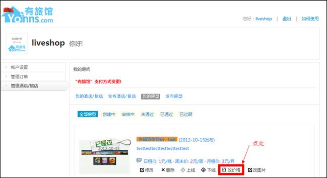
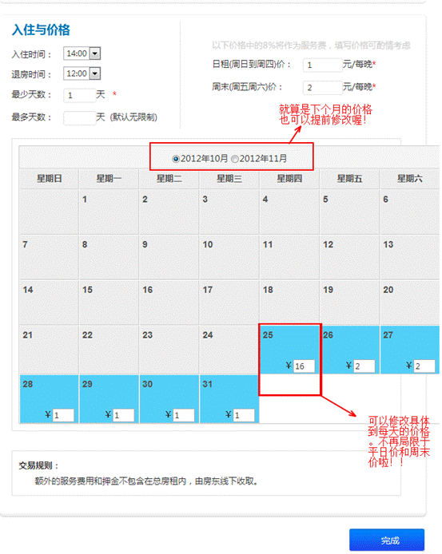
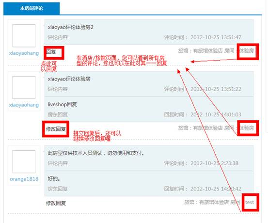

感谢各位店家一直以来对“有旅馆”网（www.yoinns.com）的大力支持，为了更好的服务各位店家，我们于10月24日推出了两个重要的新功能：价格排期和评论功能。以下是使用教程.如果有改进意见，欢迎提出。如仍有疑问，可以与我们客服QQ联系，或致电服务热线020-34726441
1.价格排期：
登录后，点击您的用户名，然后进入后台。
然后点击：管理酒店/旅店 → 我的房型 → 改价格，如下图（不同店家的房
型也不同，以下仅为示范的例子，不代表您的房型）

然后进入下面界面：
可以看到改价格时可以修改具体每天的价格了。假设25号有考试，我就可以具体针对这天进行调价，在输入框中输入新价格即可。修改完所有后，点击“完成”即可。而其他未修改的部分，继续保持默认的平日价（周末的保持默认周末价）不变。
各位店家记得有特殊情况时要及时更新价格，以保证客人订房时的价格是正确的，以保证您的订单稳稳的。祝各位店家生意兴隆。

一些常见问题：
问：我应该在什么时候改价格？
答：如果要改某日的价格，最好提前几天就改好价格，因为比较多外地来的客人都提前几天订好房的，如果能洞悉到消息，并提前改好房价，会给你带来更多的订单。
问：我能找客服了解到哪些时候有考试，以提前调整好房价么？
答：当然没问题。我们客服来自大学城各学校，了解大学城。当有考试或特殊节假日，我们的客服也会提醒各位该价格喔。当然，能自己提前改好价格更好。
您在您的房型页面（而不是旅店页面）可以看到客人对您这个旅店的这个房型的评价。
你也可以在 酒店/旅店 页面看到所有房型的评论。也可以在此对其一一回复。（但客人仅可以在房型页面发表评论）

一些常见问题：
答：这点大家放心，房客对您的评论不会马上显示出来，而是需要通过网站管理员审核，确定不是恶意评论，并且评论者在您旅馆订过房，才能让其评论显示出来。
答：为了让回复评论更直观，我们把评论回复功能整合在酒店页面和房型页面了，您无需去后台看评论，在酒店页面和房型页面即可看到评论和回复评论。
答：为了防止同行间恶性竞争，防止竞争对手抹黑或故意造谣，营造一个良性竞争的氛围，我们规定了同行间不能互相评论。